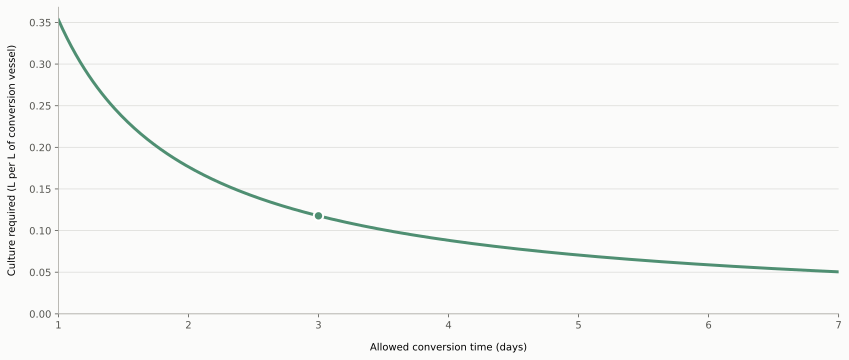
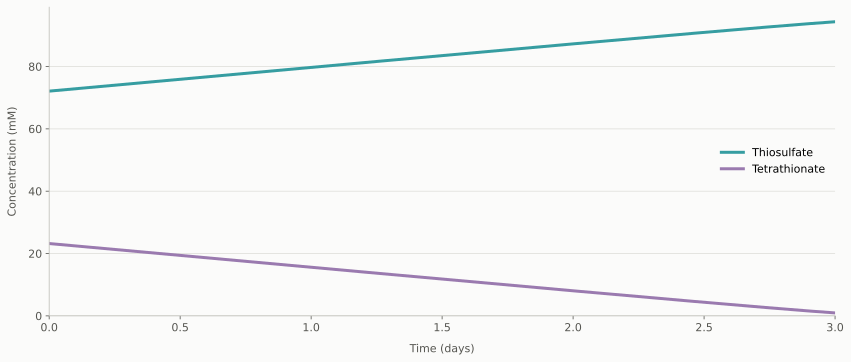
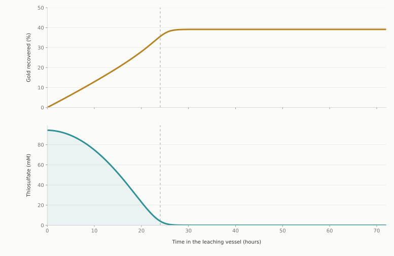
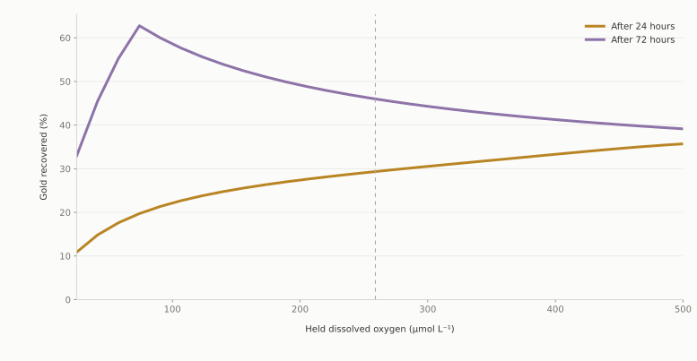
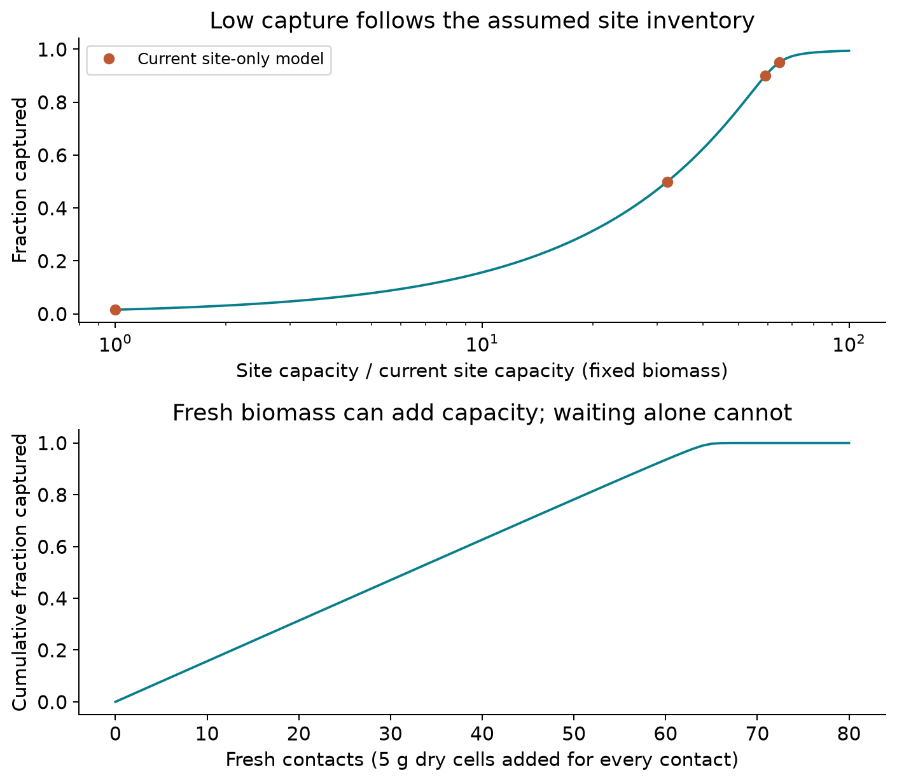
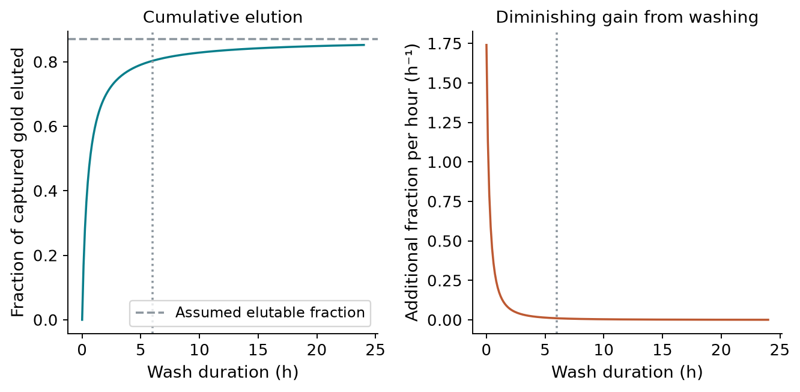

Modelling
Recovering Gold from E-waste
Can engineered E. coli effectively recover gold from electronic waste?
01
From electronic waste to metallic gold
Process overview

Introduction
Electronic waste contains valuable metals that are difficult to recover selectively and sustainably. Our project proposes an engineered E. coli-supported process that produces a thiosulfate leachant, dissolves gold from printed circuit boards, captures the dissolved gold using surface-displayed GolB, releases it with thiourea, and reduces it back to metallic gold.
Modelling is essential for connecting this biological process to both the wet-lab experiments and the hardware used to operate it. It helps translate biological behaviour into operating conditions, equipment requirements and measurable design decisions. Throughout the project, the models have guided choices affecting both the wet lab and hardware while identifying the limitations that must be resolved before scale-up.
The models follow gold through the various stages, then assess what would be required to scale the complete recovery process to an industrial level.
02
Stage one
Making the leachant
How can engineered E. coli supply TetH to prepare a thiosulfate leachant?
Model conclusion
Within the current model, engineered E. coli can supply TetH for leachant preparation. The principal design trade-off is how much culture to grow versus how long the conversion is allowed to run.
Gold must first be dissolved before it can be captured. Our process uses thiosulfate for this job, so the first modelling stage asks how the engineered cells can supply TetH and how that enzyme can prepare the leachant.
Model-informed design
Why the process became sequential
Our first model placed the cells, enzyme, sulfur chemistry and crushed PCB in one vessel. It showed that copper released from the board would consume the thiosulfate as it formed, while one vessel would force E. coli, TetH and the gold-leaching chemistry to share incompatible pH conditions.
We therefore separated the process. The cells produce TetH first; the enzyme is harvested, refolded and purified; then it converts tetrathionate without PCB-derived copper present. Only afterwards is the conversion liquor conditioned and transferred to PCB leaching. Separation does not remove copper from the later leach, but it lets thiosulfate accumulate before copper can attack it and allows each operation to be controlled independently.
Model structure
From TetH production to thiosulfate conversion
The protein-expression model estimates the TetH supplied by the culture. A recovery step makes active TetH available to a separate conversion vessel, where the enzyme concentration becomes an input to the tetrathionate model.
Model 1 · TetH supply
Culture volume supplies the selected enzyme charge
The expression model converts active TetH per cell into active TetH per litre of culture. The amount of culture required then follows from the enzyme concentration selected for the conversion vessel.
Protein-to-process connection
\[[\mathrm{TetH}]_{\mathrm{culture}}=\frac{sC_{\mathrm{cells}}}{N_A}\times 10^6\]
\[\frac{V_{\mathrm{culture}}}{V_{\mathrm{conversion}}}=\frac{E_2}{[\mathrm{TetH}]_{\mathrm{culture}}}\]
Here, \(s\) is active TetH per cell, \(C_{\mathrm{cells}}\) is culture cell density, and \(E_2\) is the active TetH concentration selected for conversion.
Model prediction
Reaching the same conversion endpoint sooner requires a larger enzyme charge and therefore more culture per litre of conversion vessel.

Model 2 · Tetrathionate conversion
TetH converts the broth substrate into thiosulfate
TetH-catalysed reaction
\[
\mathrm{S_4O_6^{2-}+H_2O \xrightarrow{TetH} S_2O_3^{2-}+S^0+SO_4^{2-}+2H^+}
\]
Governing conversion rate
The rate depends on the active TetH supplied and on how close tetrathionate is to saturating the enzyme.
\[
v=\frac{k_{\mathrm{cat}}E_2[S_4O_6^{2-}]}{K_{S_4O_6}+[S_4O_6^{2-}]}
\]
Here, \(v\) is the conversion rate, \(E_2\) is active TetH in the conversion vessel, \(k_{\mathrm{cat}}\) is its turnover rate, and \(K_{S_4O_6}\) is the tetrathionate concentration giving half the maximum rate.
What the model shows
Thiosulfate accumulates as tetrathionate is converted
Model prediction
Once active TetH is supplied under the selected operating conditions, the model predicts that tetrathionate falls while thiosulfate rises. Because the starting tetrathionate concentration is high relative to the half-saturation constant, TetH initially works close to its maximum rate and conversion is nearly linear for most of the batch.

Complete protein modelHow the cells supply TetH View equations
The expression cascade follows messenger RNA, intracellular protein, processed protein and the fraction represented as active TetH. It applies the project’s current E. coli expression framework to the TetH construct, so its expression and processing terms are model proxies rather than TetH-specific fits.
\[\frac{dm}{dt}=\alpha N-(\delta_m+\mu)m\]
\[\frac{dP_c}{dt}=\beta m-(k_{\mathrm{sec}}+\delta_c+\mu)P_c\]
\[\frac{dP_s}{dt}=k_{\mathrm{sec}}P_c\left(1-\frac{P_s}{P_{s,\max}}\right)-(\delta_s+\mu)P_s\]
\[s=fP_s\]
Here, \(m\) is messenger RNA, \(P_c\) is intracellular protein, \(P_s\) is processed protein, and \(s\) is the active TetH count assigned per cell. The default simulation begins with all three dynamic pools at zero.
The active protein count is converted to a concentration using the culture cell density, \(C_{\mathrm{cells}}\), then linked to catalytic capacity:
\[[\mathrm{TetH}]=\frac{sC_{\mathrm{cells}}}{N_A}\times 10^6\]
\[V_{\max}=k_{\mathrm{cat}}[\mathrm{TetH}]\]
\[\frac{V_{\mathrm{culture}}}{V_{\mathrm{conversion}}}=\frac{E_2}{E_{\mathrm{culture}}}\]
Implementation: protein expression, enzyme supply.
Complete conversion modelHow TetH converts tetrathionate View equations
Iodine first converts part of the broth's thiosulfate into the tetrathionate substrate:
\[\mathrm{I_2+2S_2O_3^{2-}\rightarrow 2I^-+S_4O_6^{2-}}\]
The remaining thiosulfate and newly formed tetrathionate become the two initial conditions. In the conversion vessel there are no cells, PCB particles or copper reactions, so the forward TetH reaction gives:
\[\frac{d[S_4O_6^{2-}]}{dt}=-v\]
\[\frac{d[S_2O_3^{2-}]}{dt}=Yv\]
The closed vessel also has an exact integrated solution:
\[K_{S_4O_6}\ln\left(\frac{S_0}{S}\right)+(S_0-S)=k_{\mathrm{cat}}E_2t\]
Here, \(S_0\) is the initial tetrathionate concentration and \(S\) is its concentration at time \(t\).
Implementation: conversion model.
Declared model conditionsAssumptions made in the models View assumptions
TetH production and recovery
- Protein production is represented by a linear expression model.
- Biomass is held constant and growth conditions are treated as controlled.
- Generic E. coli expression parameters are used as proxies for TetH expression.
- A fixed fraction of produced TetH is treated as active.
- Acid refolding is represented through the fixed active fraction rather than modelled as a separate step.
- Extraction and purification are treated as lossless in the supplied model.
Tetrathionate conversion
- The active enzyme concentration is constant during the batch.
- The iodine reaction and broth stoichiometry go to completion.
- The vessel is well mixed and operated at the selected conditions.
- pH, temperature and agitation are not dynamic model inputs.
- Transfer losses and competing reactions are excluded.
- Sulfur-species degradation is excluded from the current conversion trajectory.
VerificationHow the models were checked View checks
The numerical conversion trajectory is checked against the exact integrated Michaelis–Menten solution. The full repository audit counts sulfur atoms across tetrathionate, thiosulfate and the other sulfur products rather than treating a two-species molecule count as elemental conservation.
The expression-to-enzyme interface is recomputed from the protein model so changes upstream cannot silently leave the catalytic capacity behind.
Checks: conversion and balances, model handover.
Complete evidence tableParameters used by the models View table
| Model | Symbol | Meaning | Current value and unit | Evidence |
|---|---|---|---|---|
| TetH production and recovery | ||||
| Expression | \(\alpha\) | Transcription per plasmid copy | 0.5 mRNA min−1 copy−1 | Literature |
| Expression | \(N\) | Plasmid copies per cell | 300 copies cell−1 | Selected from range |
| Expression | \(\delta_m\) | mRNA degradation | 0.20 min−1 | Literature |
| Expression | \(\beta\) | Translation per mRNA | 4.0 protein min−1 mRNA−1 | Literature |
| Expression | \(k_{\mathrm{sec}}\) | Protein processing or export | 0.10 min−1 | Fitted |
| Expression | \(\delta_c\) | Intracellular protein loss | 0.005 min−1 | Assumed |
| Expression | \(\delta_s\) | Processed protein loss | 0.005 min−1 | Assumed |
| Expression | \(\mu\) | Growth dilution | 0.02 min−1 | Literature |
| Expression | \(f\) | TetH-active fraction proxy | 0.5 | Model proxy |
| Expression | \(P_{s,\max}\) | Processing or display ceiling | 1.0 × 105 sites cell−1 | Literature |
| Culture | \(X\) | Dry biomass concentration | 4.0 g L−1 | Design choice |
| Recovery | \(\eta_{\mathrm{pur}}\) | Activity surviving recovery | Lossless in supplied model | Assumed |
| Tetrathionate conversion | ||||
| Conversion | \(E_2\) | Active TetH charged | 0.043 µmol L−1 | Design choice |
| Conversion | \(k_{\mathrm{cat}}\) | TetH turnover | 125 min−1 | Literature |
| Conversion | \(K_{S_4O_6}\) | Tetrathionate half-saturation | 300 µmol L−1 | Selected from range |
| Conversion | \(Y\) | Thiosulfate produced per tetrathionate | 1 | Reaction |
| Broth | \([S_4O_6^{2-}]_0\) | Initial tetrathionate | 23.2 mmol L−1 | Recipe-derived |
| Broth | \([S_2O_3^{2-}]_0\) | Initial thiosulfate remaining after iodine | 72.1 mmol L−1 | Recipe-derived |
| Conversion | \(t_2\) | Selected batch duration | 4,320 min | Design choice |
| Conversion | \(k_{\mathrm{decay}}\) | Loss of active TetH during conversion | No decay in supplied model | Assumed |
Parameter sources: protein model, leachant model.
Engineering impact
What this stage informs
Produce TetH in a separate culture step, then harvest, refold and purify the enzyme before conversion.
Select enzyme loading and batch duration together rather than treating either as fixed independently.
Use separate culture and conversion vessels with independent transfer, mixing and condition control.
Handover
Passing the leachant forward
After TetH conversion, the liquor is adjusted to the PCB-leaching conditions. Its thiosulfate and residual tetrathionate concentrations then initialise the leaching model.
Leaves the conversion vessel
Model prediction
94.4 mmol L−1
thiosulfate, \([S_2O_3^{2-}]_{\mathrm{out}}\)
0.94 mmol L−1
tetrathionate left unconverted, \([S_4O_6^{2-}]_{\mathrm{out}}\)
The conversion time sets these concentrations but does not enter the next model.
Condition before PCB contact
pH · temperature · transferred volume
Enters the PCB-leaching model
Initial conditions
\([S_2O_3^{2-}]_{\mathrm{leach},0}\)
conditioned thiosulfate concentration
\([S_4O_6^{2-}]_{\mathrm{leach},0}\)
conditioned tetrathionate concentration
Conversion model at \(t_2\): leachant parameters · handover check
03
Stage two
Dissolving the gold
How long can the leachant dissolve gold before copper consumes its useful thiosulfate?
Model conclusion
The current model predicts a productive leaching window rather than continuous improvement with time. Gold dissolves while thiosulfate and an oxidant are available, but copper from the PCB creates a competing reaction that can exhaust the leachant. Ammonia, oxygen supply and batch duration therefore have to be selected together.
Prepared liquor
Thiosulfate from Stage 1
Electronic-waste feed
Crushed, gold-plated PCB
Selected reagent
266 mmol L−1 ammonia
Hardware input
Controlled air supply
Reaction network
Copper helps the oxidation—and spends the leachant
Gold can be oxidised directly by oxygen or by Cu(II). Copper metal also dissolves from the board as Cu(I), which oxygen converts back to Cu(II). That regenerated Cu(II) can support gold dissolution, but it also converts thiosulfate into tetrathionate. The ammoniacal process slows this competing loss by binding Cu(II).
Governing model
Gold dissolution needs surface area, thiosulfate and an oxidant
The rate combines the exposed gold-film area with saturating terms for thiosulfate and the two parallel oxidant routes. If any required factor becomes small, productive leaching slows.
Gold dissolution rate
\[
R_{Au}=a_{Au}(t)\frac{[S_2O_3^{2-}]}{K_{S_2O_3}+[S_2O_3^{2-}]}
\left(k_{Au,O_2}\frac{[O_2]}{K_{O_2}+[O_2]}+
k_{Au,Cu}\frac{[Cu(II)]}{K_{Cu(II)}+[Cu(II)]}\right)
\]
(R_{Au}) is the gold dissolution rate, (a_{Au}) is exposed gold area, and each (K) is the concentration giving half of that pathway's maximum contribution.
\[Au^0+2S_2O_3^{2-}+Cu(II)\rightarrow Au(S_2O_3)_2^{3-}+Cu(I)\]
\[2Cu(II)+2S_2O_3^{2-}\rightarrow2Cu(I)+S_4O_6^{2-}\]
Operating time
Continuing the batch does not always recover more gold
The model initially accumulates dissolved gold while thiosulfate is abundant. As the copper-driven loss consumes that finite budget, the gold curve levels off. This supports the document's decision to design around a one-day batch rather than assuming that a three-day residence time is automatically better.

Aeration decision
Oxygen is both a driver and a control lever
More oxygen accelerates oxidation early in the batch, but it also converts Cu(I) into the Cu(II) that consumes thiosulfate. The preferred oxygen strategy therefore changes with residence time and cannot be chosen independently of the batch schedule.
Hardware implication
Use adjustable aeration, not an assumed unlimited oxygen concentration.

Engineering impact
How the model informs the process
The model links the wet-lab chemistry directly to operation of the leaching vessel. Ammonia is charged to protect thiosulfate from Cu(II), while adjustable aeration prevents oxygen from being treated as an unlimited input. The batch is stopped using the dissolved-gold and remaining-thiosulfate profiles, with one day as the current process decision.
It also defines what must be recorded for each PCB feed. Gold-film coverage controls the available gold surface, while particle size controls the exposed copper area and therefore the competing copper chemistry.
Model detailComplete reaction and rate modelView equations
Gold reactions
\[4Au^0+8S_2O_3^{2-}+O_2+2H_2O\rightarrow4Au(S_2O_3)_2^{3-}+4OH^-\]
\[Au^0+2S_2O_3^{2-}+Cu(II)\rightarrow Au(S_2O_3)_2^{3-}+Cu(I)\]
Gold-film geometry
\[a_{Au}=\frac{m_{Au}}{\rho_{Au}t_{film}},\qquad \frac{dn_{Au}}{dt}=-R_{Au},\qquad \frac{d[Au(S_2O_3)_2^{3-}]}{dt}=\frac{R_{Au}}{V}\]
Gold is treated as a plated film that thins at approximately constant face area until it is exhausted.
Copper reactions
\[4Cu^0+O_2+8S_2O_3^{2-}+2H_2O\rightarrow4[Cu(S_2O_3)_2]^{3-}+4OH^-\]
\[Cu^0+Cu^{2+}+4S_2O_3^{2-}\rightarrow2[Cu(S_2O_3)_2]^{3-}\]
\[4Cu(I)+O_2+2H_2O\rightarrow4Cu(II)+4OH^-\]
\[2Cu(II)+2S_2O_3^{2-}\rightarrow2Cu(I)+S_4O_6^{2-}\]
Copper-particle geometry and rates
\[a_{Cu}(0)=\frac{6m_{Cu}}{\rho_{Cu}d},\qquad a_{Cu}(t)=a_{Cu}(0)\left(\frac{n_{Cu}}{n_{Cu}(0)}\right)^{2/3}\]
\[v_{Cu,O_2}=k_{Cu,O_2}a_{Cu}(t)\frac{[O_2]}{K_{O_2}+[O_2]}\frac{[S_2O_3^{2-}]}{K_{S_2O_3}+[S_2O_3^{2-}]}\]
\[v_{Cu,Cu}=k_{Cu,Cu}a_{Cu}(t)\frac{[Cu(II)]}{K_{Cu(II)}+[Cu(II)]}\frac{[S_2O_3^{2-}]}{K_{S_2O_3}+[S_2O_3^{2-}]}\]
\[v_3=k_{par}[Cu(II)][S_2O_3^{2-}],\qquad v_4=k_{ox,Cu}[O_2][Cu(I)]\]
Species balances
\[\frac{dn_{Cu}}{dt}=-(v_{Cu,O_2}+v_{Cu,Cu})\]
\[\frac{d[S_2O_3^{2-}]}{dt}=-\frac{2R_{Au}}{V}-\frac{2v_{Cu,O_2}+4v_{Cu,Cu}}{V}-2v_3\]
\[\frac{d[S_4O_6^{2-}]}{dt}=v_3\]
\[\frac{d[Cu(I)]}{dt}=\frac{v_{Cu,O_2}+2v_{Cu,Cu}+R_{Au,Cu}}{V}+2v_3-4v_4\]
\[\frac{d[Cu(II)]}{dt}=4v_4-\frac{v_{Cu,Cu}+R_{Au,Cu}}{V}-2v_3\]
Hardware modelOxygen transfer and pH controlView equations
When oxygen is supplied by the air pump, dissolved oxygen becomes a state rather than a fixed input:
\[\frac{d[O_2]}{dt}=k_La(C^*-[O_2])-\frac{R_{Au,O_2}+v_{Cu,O_2}}{4V}-v_4\]
(k_La) describes gas-to-liquid transfer and (C^*) is the air-saturation ceiling. The final term charges one oxygen molecule per copper re-oxidation event.
For controlled pH, the dosing system holds the set point and the model reports the titrant demand:
\[pH=pH_{set},\qquad \frac{dAlk}{dt}=0,\qquad \frac{dDose}{dt}=-\left.\frac{dAlk}{dt}\right|_{chem}\]
Model scopeAssumptions and limitationsView assumptions
Assumptions stated in the document
- The vessel is well mixed and isothermal.
- PCB particles are represented by a uniform geometry and gold-film thickness.
- Only gold and copper affect the tracked chemistry.
- Ammonia is present at 266 mmol L−1.
- The initial model treats oxygen as excess; the intervention replaces this with pump-limited transfer.
Important limitations
- Passivation and sulfur fouling are not represented.
- Gold re-deposition onto remaining copper is not represented.
- Other PCB metals and mass-transfer resistance are excluded.
- Several copper and parasitic rate constants are borrowed from ammoniacal literature rather than measured in this vessel.
- The predicted endpoint depends strongly on the real PCB gold-film area.
Wet-lab recordExperimental evidenceView evidence
To be appended
No project experimental results have been added to this stage yet. Gold, copper, thiosulfate and dissolved-oxygen measurements can be placed here when the planned leaching runs are complete.
Evidence ledgerLeaching parametersView table
| Group | Symbol | Quantity | Value used | Evidence |
|---|---|---|---|---|
| Reagent | \([NH_3]_T\) | Ammonia charge | 266 mmol L−1 | Document process |
| Operation | \(t_3\) | Selected batch duration | 24 h | Design choice |
| Oxygen | \([O_2]\) | Fixed-oxygen comparison | 500 µmol L−1 | Model scenario |
| Oxygen | \(C^*\) | Air-saturation ceiling at 25 °C | 259 µmol L−1 | Literature |
| Gold | \(k_{Au,O_2}\) | Gold rate constant, oxygen route | 11 µmol m−2 min−1 | Literature |
| Gold | \(k_{Au,Cu}\) | Gold rate constant, ammoniacal Cu(II) route | 1.5 × 103 µmol m−2 min−1 | Literature |
| Surface | \(t_{film}\) | Gold plating thickness | 0.5 µm working value | Assumed |
| Surface | \(d\) | Crushed-particle size | Feed-dependent | Required measurement |
| Transfer | \([S_2O_3^{2-}]_0\) | Initial thiosulfate | Output from Stage 1 | Model handover |
| Transfer | \([S_4O_6^{2-}]_0\) | Initial tetrathionate | Output from Stage 1 | Model handover |
Values are centralised in the leaching parameter file. Document-specified process choices take priority in this wiki draft.
VerificationModel checks and implementationView links
The implementation checks non-negative inventories, reaction stoichiometry, sulfur accounting, metal exhaustion, the copper redox loop and oxygen-transfer bookkeeping.
Leach-to-capture handover
The dissolved-metal liquor leaves the PCB solids behind
At the selected endpoint, the solids are separated from the liquor. The dissolved gold concentration becomes the capture model's feed, while residual sulfur species, copper, pH and transferred volume define the conditions that the capture stage must receive.
Leaching vessel
PCB solids + reacting liquor
Separate solids
Clarified leach liquor
Capture-model input
\(Au_{feed}=[Au(S_2O_3)_2^{3-}]\)
Also carried forward
residual thiosulfate · tetrathionate · dissolved copper · transferred volume · conditioning requirement
Interface definition: leach-to-capture handover · evidence status: model prediction until leachate measurements are appended.
04
Overview stage three
Capturing the gold
Can GolB-displaying cells capture enough dissolved gold from the leachate to supply the rest of the recovery process?
Conditional simulation
The current reference is limited by the number of modelled sites
The capture calculation joins the dissolved-gold feed from leaching to the binding-site inventory supplied by the GolB expression model. It solves binding and gold conservation together, so the cells can never bind more gold than entered the vessel or more than the represented sites can hold.
At the current reference point, those sites are almost occupied. Improving affinity alone cannot lift that inventory ceiling. The useful next question is whether real whole cells bind more gold than the single-site calculation represents, and whether those sites remain functional in the sulfur-rich leachate.

Count gold and sites in the same balance
The binding equation uses free gold, not all gold added. As gold binds, the free concentration falls. Solving that feedback prevents impossible predictions and makes the capacity limit visible.
Measure capacity before optimising speed
Compare GolB-displaying cells, unmodified cells and a cell-free blank in representative leachate. Measure both dissolved and cell-associated gold so binding can be separated from background adsorption or loss.
Core modelBinding with gold conservationView equation
Let total gold concentration be (A_T), free gold be (A_T-C), bound gold be (C), available site concentration be (S), and the apparent dissociation constant be (K_d).
\[C=\frac{S(A_T-C)}{K_d+A_T-C}\]
The implementation uses the stable positive solution of this mass-balance equation. Capture is an equilibrium calculation; it does not yet predict contact time, transport resistance or damage to sites.
Evidence boundaryWhat the site inventory does not proveView limitations
Verified internally
- Bound gold never exceeds the gold feed.
- Bound gold never exceeds the represented site inventory.
- The expression-to-capture joint is recomputed rather than copied.
Still needs measurement
- Functional whole-cell capacity in the project leachate.
- Background adsorption by unmodified cells.
- GolB activity after exposure to tetrathionate and other sulfur species.
Evidence ledgerCapture inputs and provenanceView table
| Input | Role | Evidence status | Source of truth |
|---|---|---|---|
| (A_T) | Total dissolved gold entering capture | Model handover | Recovery parameters |
| (S) | Single-occupancy site inventory | Derived upstream | Expression interface |
| (K_d) | Apparent GolB-gold affinity | Unmeasured proxy | Recovery parameters |
| Whole-cell capacity | Empirical capacity in the real matrix | Unmeasured | Capture investigation |
Handover to stage four
Loaded cells move forward; unbound gold does not
The captured amount, not the original feed and not the total site inventory, becomes the initial gold available for release. The model keeps the much larger uncaptured amount in the ledger.
Passed forward(n_{captured})gold bound to GolB-displaying cells
05
Overview stage four
Releasing the gold
How much captured gold can a thiourea wash release, and when does a longer wash stop being useful?
Empirical scenario
Wash speed and the final release ceiling are different questions
The elution model separates the rate of approach from the fraction that remains bound. A longer wash can move the system closer to its assumed ceiling, but it cannot change that ceiling. This keeps a faster wash from being mistaken for a more complete one.
The present curve is a literature-motivated hypothesis. It has not been fitted to GolB cells at the intended loading, and the selected eluate must also remain compatible with the reduction chemistry that follows.

The wash approaches a ceiling
Early in the wash, time releases gold quickly. Later, each extra hour contributes less. Gold assigned to the non-elutable fraction remains with the cells unless the chemistry itself changes.
Fit the endpoint and the rate separately
Measure gold in the wash and gold remaining on the cells across time. Compare candidate curve shapes at the intended loading, then test whether the resulting eluate can enter reduction without inhibition.
Core modelEmpirical release curveView equation
Let (f_r) be the fraction that remains non-elutable, (k_e) the apparent elution rate, and (t_e) the wash duration. The eluted fraction is
\[\eta_e=(1-f_r)\frac{k_et_e}{1+k_et_e},\qquad n_e=n_c\eta_e\]
The coefficient is conditional on loading, material, wash chemistry and volume. It must be re-fitted if those conditions change.
Evidence boundaryWhat the wash model can establishView limitations
Useful now
- Tracks the actual captured amount into the wash.
- Separates release speed from release completeness.
- Supports explicit wash-volume accounting.
Still needs measurement
- Elution curve shape at the intended loading.
- Final non-elutable fraction for the selected chemistry.
- Compatibility of the eluate with reduction.
Evidence ledgerRelease inputs and provenanceView table
| Input | Role | Evidence status | Source of truth |
|---|---|---|---|
| (n_c) | Gold actually captured | Model handover | Process ledger |
| (f_r) | Fraction remaining bound | Literature transfer | Recovery parameters |
| (k_e) | Apparent approach rate | Provisional | Recovery parameters |
| Thiourea wash | Only documented eluent option | Operating scenario | Technical model |
Handover to stage five
The eluate carries gold concentration, volume and chemistry
The reduction stage receives an amount of released gold and a liquid volume. Added lysate can dilute that gold; any concentration step or transfer loss must be represented explicitly rather than hidden in an efficiency.
Passed forwardLoading… µMreference dissolved gold in the reduction feed